Building and customizing ggplot2-based diagnostic plots with the mixpoissonreg package
Alexandre B. Simas
2021-03-11
Source:vignettes/ggplot2-plots-mixpoissonreg.Rmd
ggplot2-plots-mixpoissonreg.Rmd
ggplot2-based diagnostic plots
To obtain ggplot2-based diagnostic plots for mixpoissonreg objects one should use the autoplot method.
In the subsequent sections we will show how to use the autoplot method as well as how to use its arguments to customize the plots.
Choosing plots
The first, and maybe the easiest, customizable option is the choice of plots to be displayed. The current available plots are (together with their corresponding numbers):
- Residuals vs Obs. number
- Normal Q-Q
- Cook’s distance
- Generalized Cook’s distance
- Cook’s dist vs Generalized Cook’s dist
- Response vs Fitted means
These plots can be chosen by giving a list of the numbers of the wanted plots in the which argument.
If the argument which is not provided, then, by default, the plots 1, 2, 5 and 6 will be displayed:
library(mixpoissonreg)
fit <- mixpoissonreg(daysabs ~ gender + math + prog | gender + math + prog,
data = Attendance)
autoplot(fit)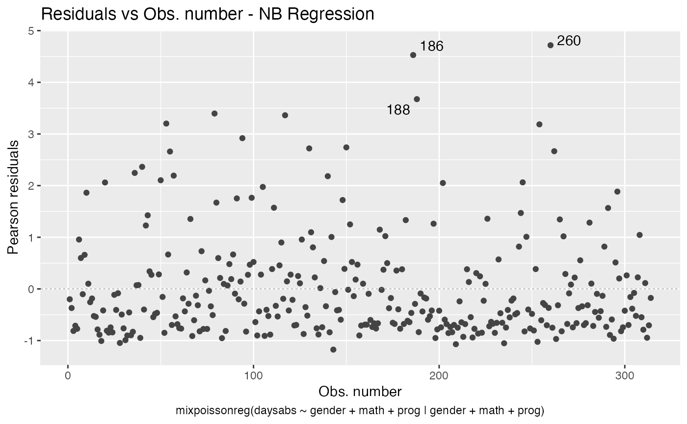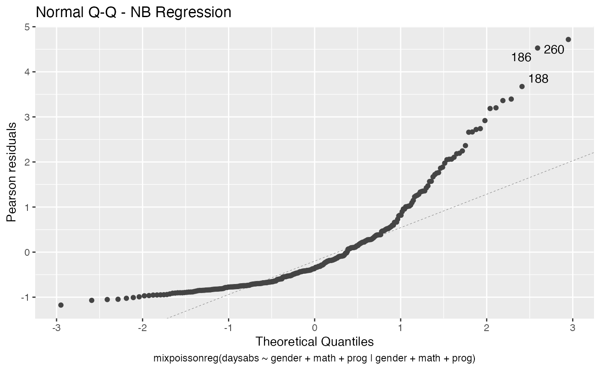
If we want only a single plot, we simply indicate its number. For instance, if we only want the plot of Cook’s distances, we simply set which = 3:
autoplot(fit, which = 3)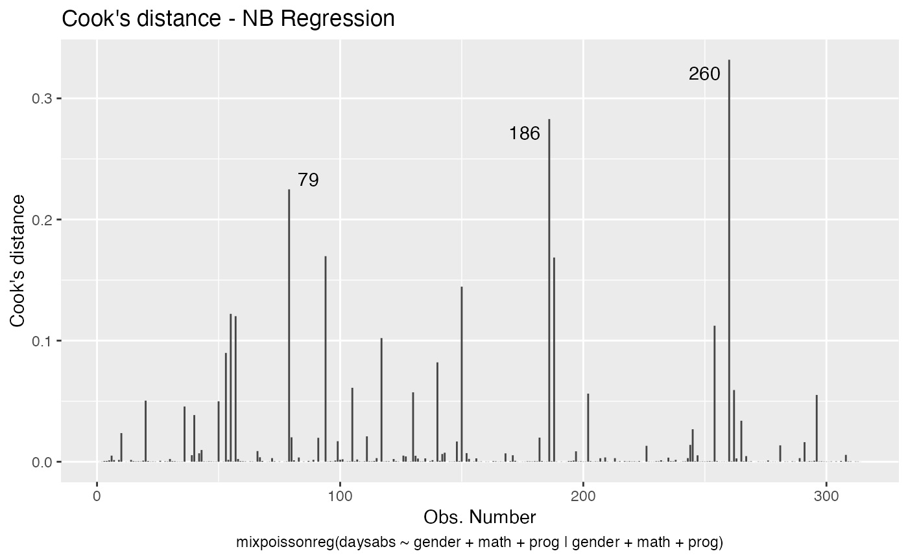
If we want more than one, we provide a list with the desired plots. Suppose we want the global influence-related plots, that is, plots 3, 4 and 5. Then, we set which = c(3,4,5):
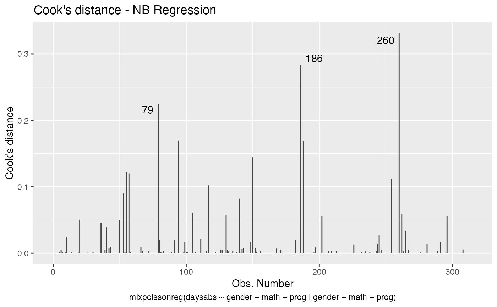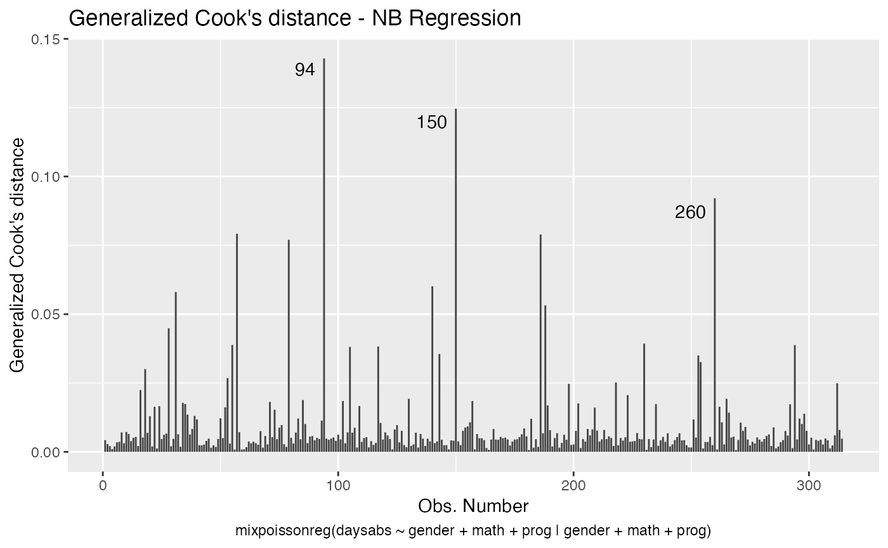
Titles and subtitles
In this section we will describe how to customize titles and subtitles.
First of all, by default, the type of the fitted model (that is, if it is a Negative-Binomial or Poisson Inverse Gaussian regression) is included in each title. See, for instance, the plot below:
autoplot(fit, which = 1)To remove the model type, simply set include.modeltype to FALSE:
autoplot(fit, which = 1, include.modeltype = FALSE)
One should notice that in both plots, the type of the residual was only included in the y-axis label. To also include the type of the residual at the title, simply set include.residualtype to TRUE:
autoplot(fit, which = 1, include.residualtype = TRUE)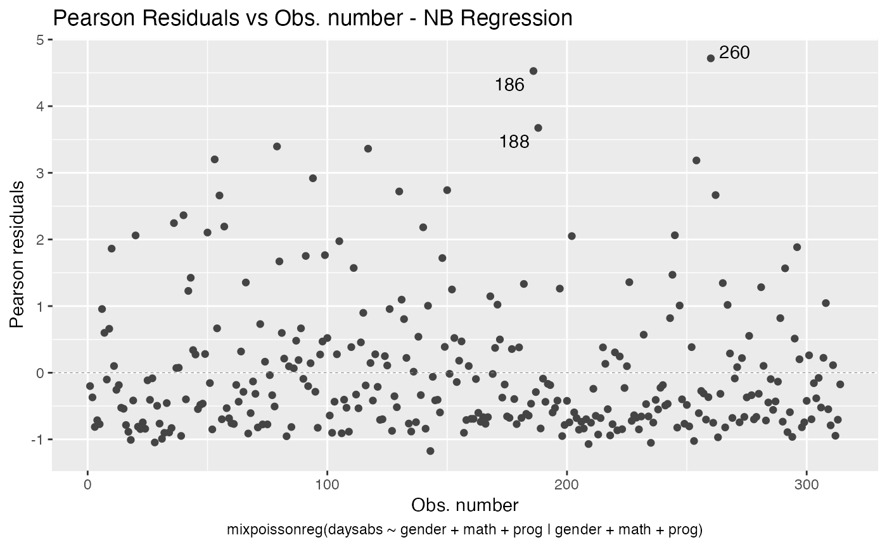
The titles of the plots (displayed above the plot) can be altered by setting the title parameter to a list containing the wanted titles. One drawback is that we have to provide a list containing the titles we want in the positions of the plots we want. For example, if we only have one plot, the following example will change the caption:
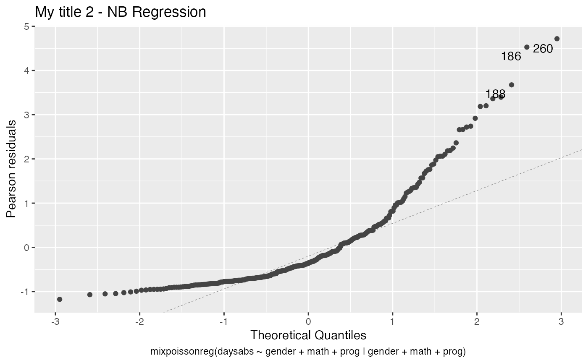
Similarly, if we wanted to set the titles of plots 2 and 4, we could do:
my_titles <- rep("",6)
my_titles[2] <- "My title 2"
my_titles[4] <- "My title 4"
autoplot(fit, which = c(2,4), title = my_titles)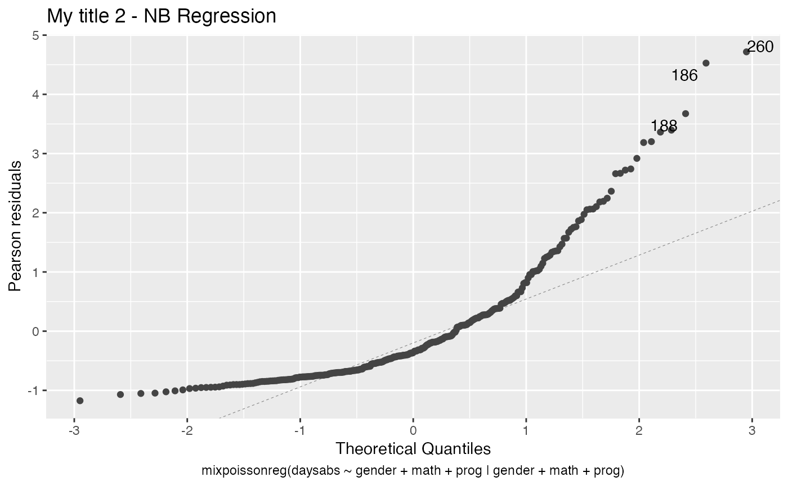
Notice that, since we did not change the include.modeltype argument, the model type are added in the new captions.
We can change the size of the titles with the argument title.size. So, for instance,
autoplot(fit, which = 1, title.size = 20, include.modeltype = FALSE)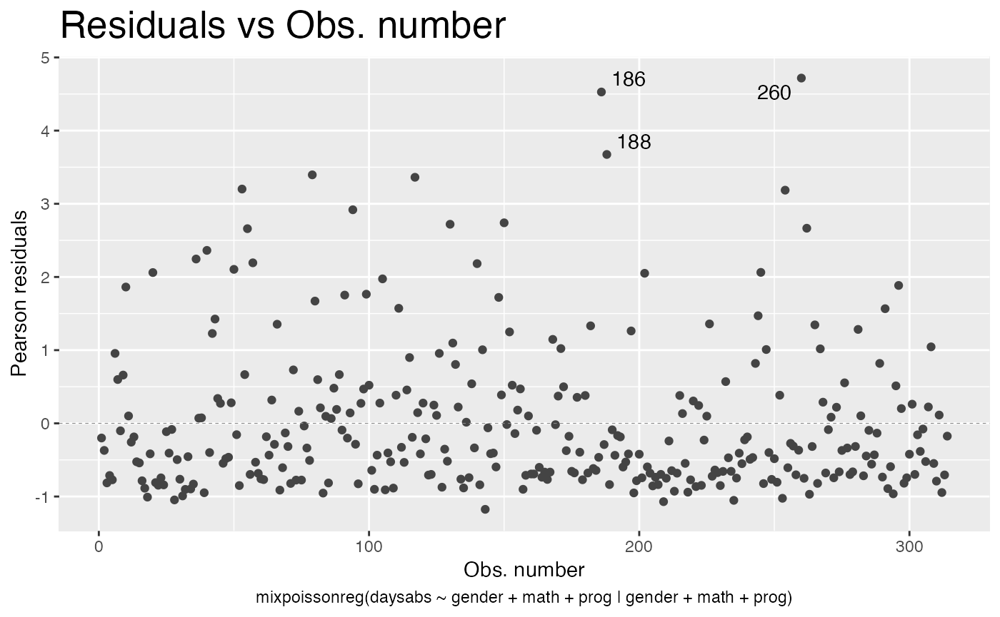
We can also turn the title bold by setting the argument title.bold to TRUE:
autoplot(fit, which = 1, title.bold = TRUE)
We can also change the subcaption. By default, the subcaption is a simplified version of the call to the mixpoissonreg function that was used to fit the model.
We must have some caution on describing the subcaption. If each plot is given in one window (in the case both ncol and nrow are NULL), then the subcaption is the caption below the x-axis label. However, if multiple plots are given at once, and there is space on the upper part of the plot, then the subcaption is a general caption for all the plots.
We will illustrate the above description with examples to make it clearer.
The subcaption can be altered by setting the sub.caption parameter to the desired caption.
Thus, we begin by providing the situation of one plot at a time.
autoplot(fit, which = 1, sub.caption = "My subcaption")Notice that the subcaption is below the x-axis label. The same happens even if we there is more than one plot but both ncol and nrow are NULL:
autoplot(fit, sub.caption = "My subcaption")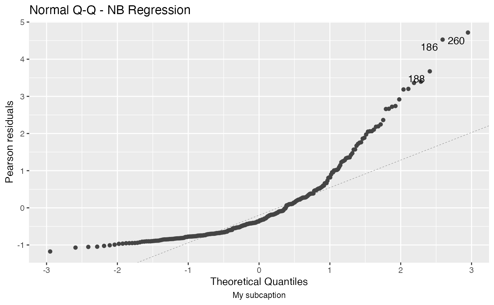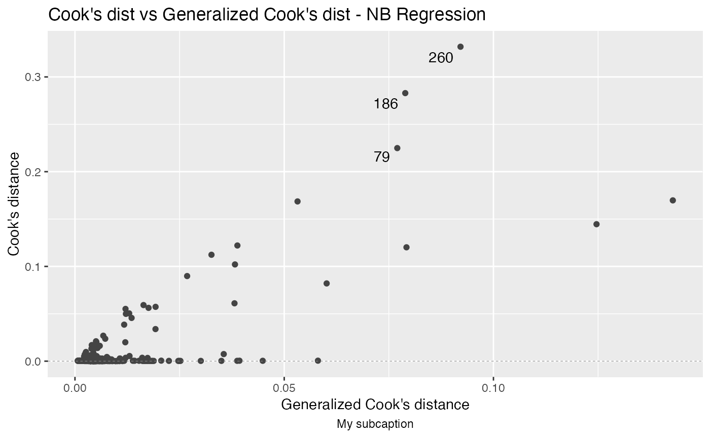
Now, notice the position of the subcaption when we gather multiple plots using the one of the arguments ncol and/or nrow:
autoplot(fit, sub.caption = "My subcaption", nrow = 2)In the previous case, that is, the case in which we have the subcaption above all plots,notice that the common title is bold by default. One can make it not bold by setting gpar_sub.caption argument to list():
Similarly, we can change the size of the subcaption using the argument by defining a fontsize element to the gpar_sub.caption list. For instance,
Colors, sizes, point types and line types
In this section we show how to customize colors, sizes and types of lines and points.
First of all, let us change the shape of the points. To this end we set the shape argument to the desired shape:
autoplot(fit, which = 1, shape = 2)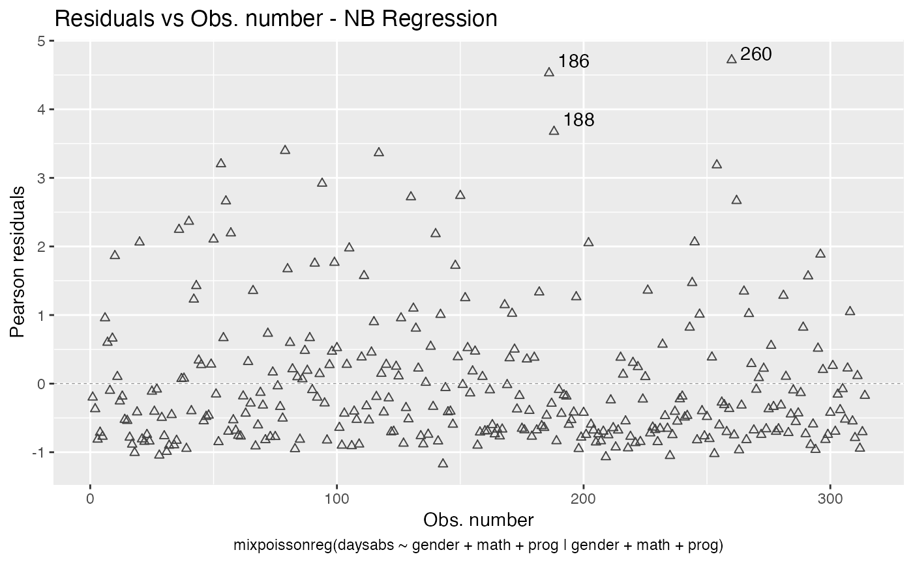
Now let us deal with the point colors. To change the colors of the points, we use the colour argument:
autoplot(fit, which = 1, colour = "red")
To change the point sizes, we use the size argument:
autoplot(fit, which = 1, size = 5)We will now deal with point labels. First of all, we may change the color of the point labels by using the argument label.colour:
autoplot(fit, which = 1, label.colour = "red")We can change the point labels’ sizes by using the label.size argument:
autoplot(fit, which = 1, label.size = 10)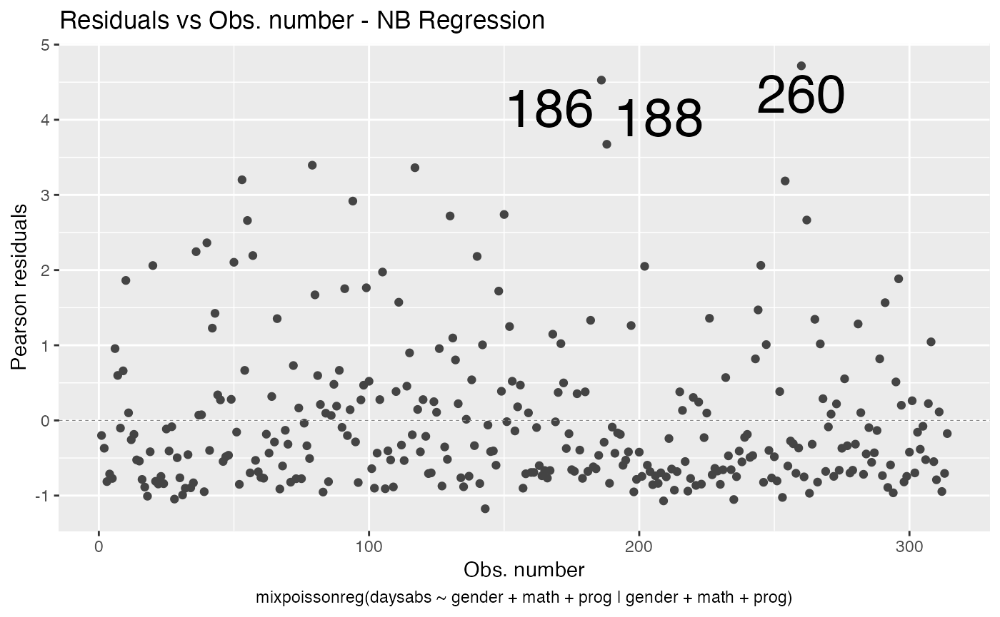
Another example is the title color. We can change the title color with the title.colour argument:
autoplot(fit, which = 1, title.colour = "red")
We can also change the title size, by using the title.size argument:
autoplot(fit, which = 1, title.size = 20)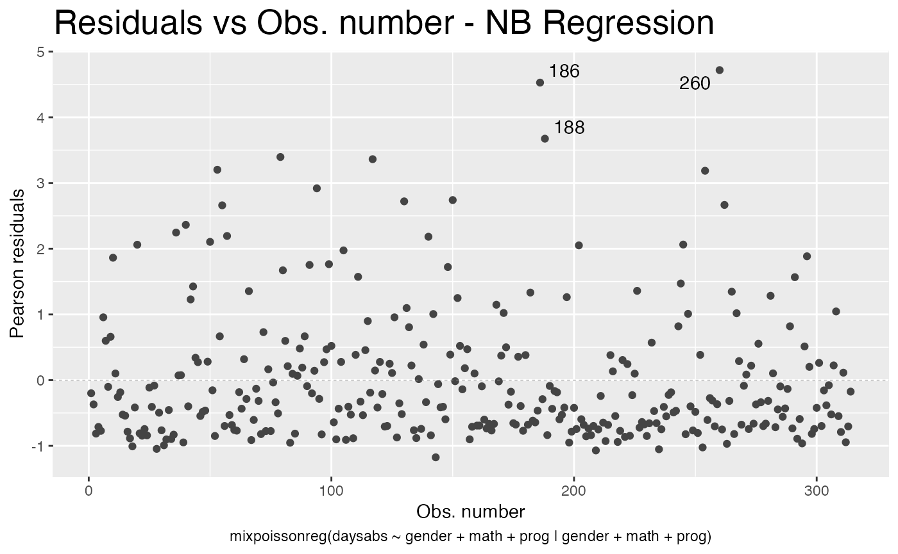
Similarly, we can change the x and y label’s colors by using the x.axis.col and y.axis.col arguments:
autoplot(fit, which = 1, x.axis.col = "orange", y.axis.col = "red")As well as change their sizes by using the x.axis.size and y.axis.size arguments:
autoplot(fit, which = 1, x.axis.size = 20, y.axis.size = 20)We can change the sub.caption color by using the sub.caption.col argument:
autoplot(fit, which = 1, sub.caption.col = "red")and change its size by using the sub.caption.size argument:
autoplot(fit, which = 1, sub.caption.size = 20)
We can also change the font face by using the sub.caption.face argument:
autoplot(fit, which = 1, sub.caption.face = "italic")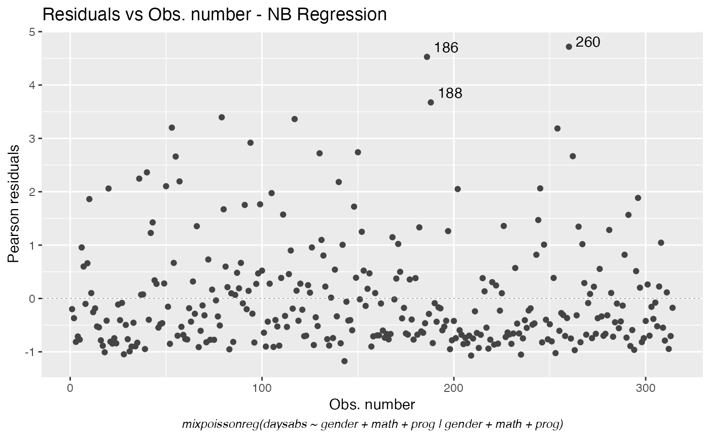
We can change the position of the subcaption by changing the sub.caption.hjust argument. The default is 0.5 which indicates that the subcaption is centered. We can place the subcaption to the left side of the plot by setting it to 0:
autoplot(fit, which = 1, sub.caption.hjust = 0)We can also place it on the right side of the plot by setting it to 1:
autoplot(fit, which = 1, sub.caption.hjust = 1)Let us now customize the lines in the Cook’s distance plots, namely plots 3 and 4. By default, the line type for Cook’s distance plots is “linerange”:


We change the line colors by using the colour argument:
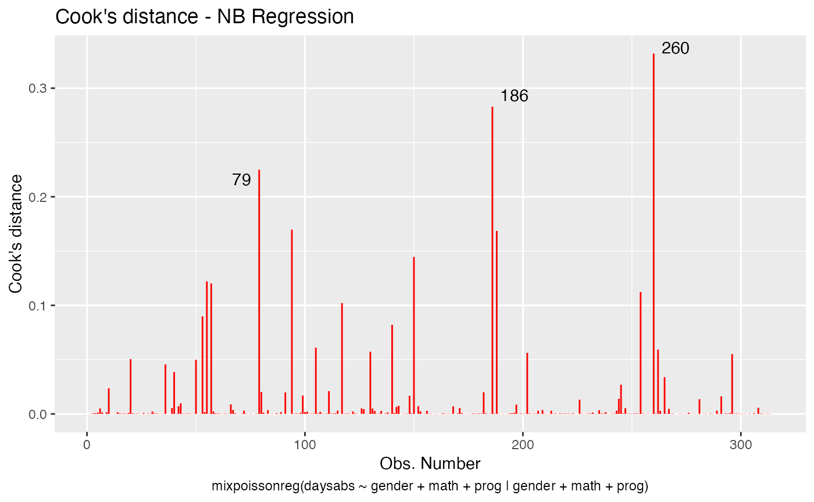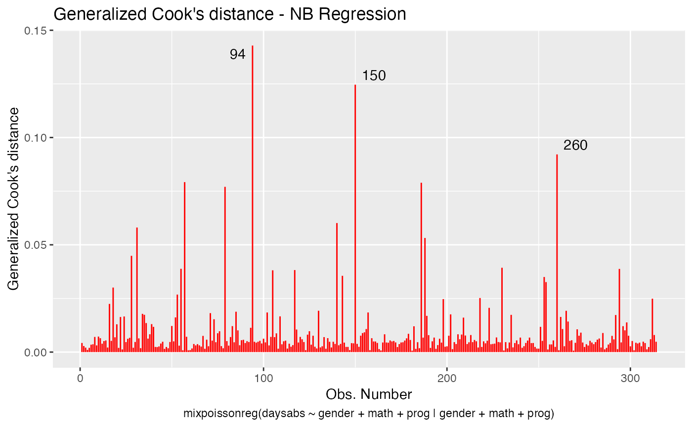
Let us change the line type for Cook’s distance plots to points and change the point types to crosses:
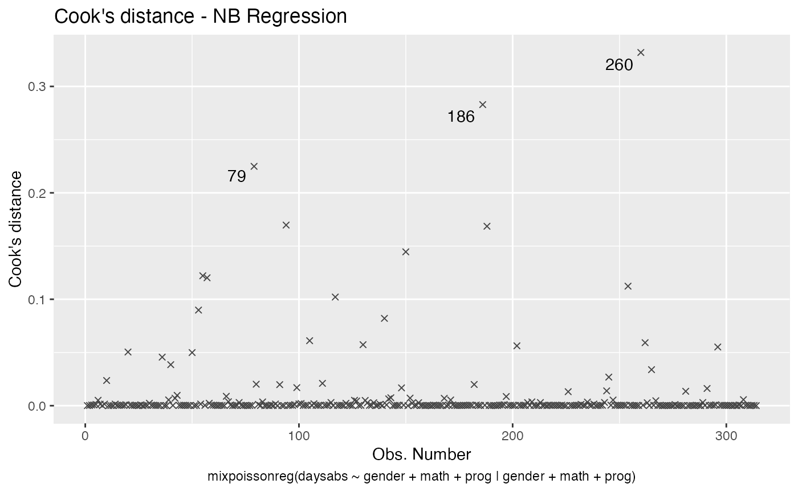
Finally, let us customize the quantile-quantile plots with and without simulated envelopes, namely, plot 2. The first customization is to remove the diagonal Q-Q line in the quantile-quantile plot without simulated envelopes:
autoplot(fit, which = 2, qqline = FALSE)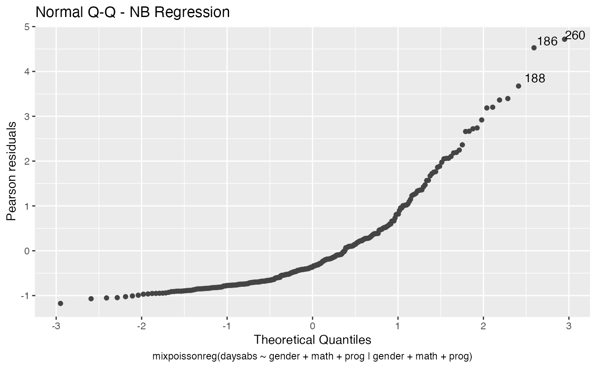
We can change the qqline color by using the ad.colour argument:
autoplot(fit, which = 2, ad.colour = "red")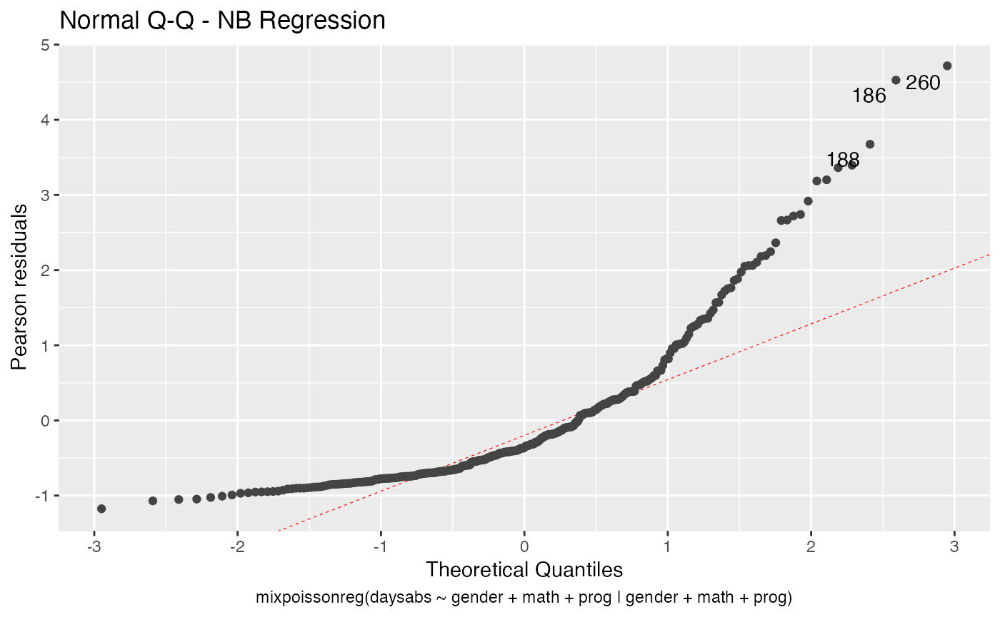
Finally, let us consider a fitting with simulated envelopes:
fit_env <- mixpoissonregML(daysabs ~ gender + math + prog | gender +
math + prog, envelope = 100, data = Attendance)
autoplot(fit_env, which = 2)
Let us first change the color of the median line of the simulated envelopes:
autoplot(fit_env, which = 2, ad.colour = "red")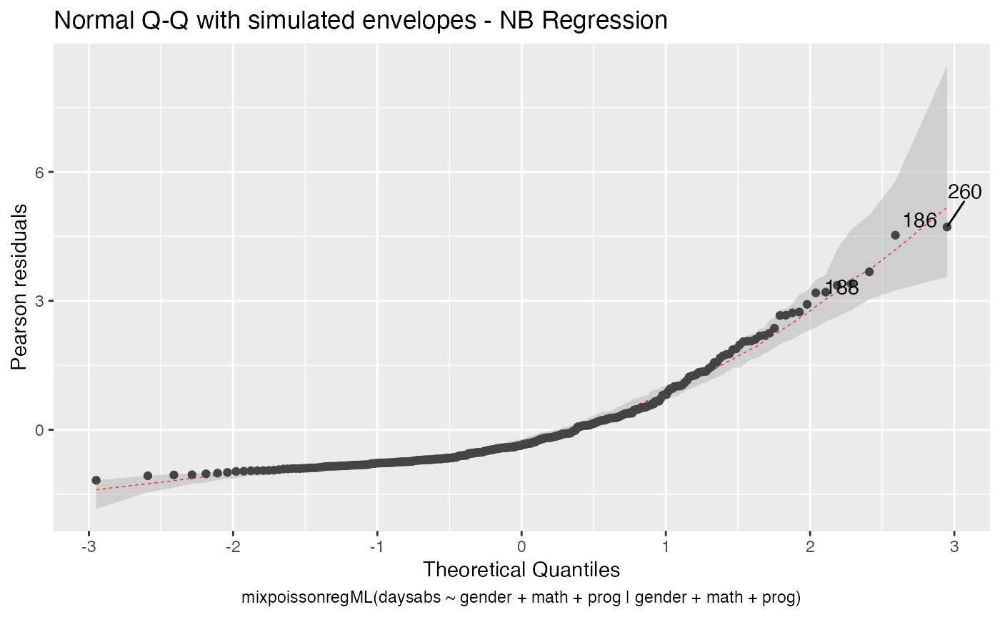
Let us also change the fill color of the simulated envelopes:
autoplot(fit_env, which = 2, env_fill = "red")We can change the transparency of the envelope by changing the env_alpha argument:
autoplot(fit_env, which = 2, env_fill = "red", env_alpha = 0.2)Points to be identified
By default the autoplot.mixpoissonreg function always identifies the 3 “most extreme” points. We can change it so that it does not identify any points by setting the argument label.n to 0:
autoplot(fit, label.n = 0)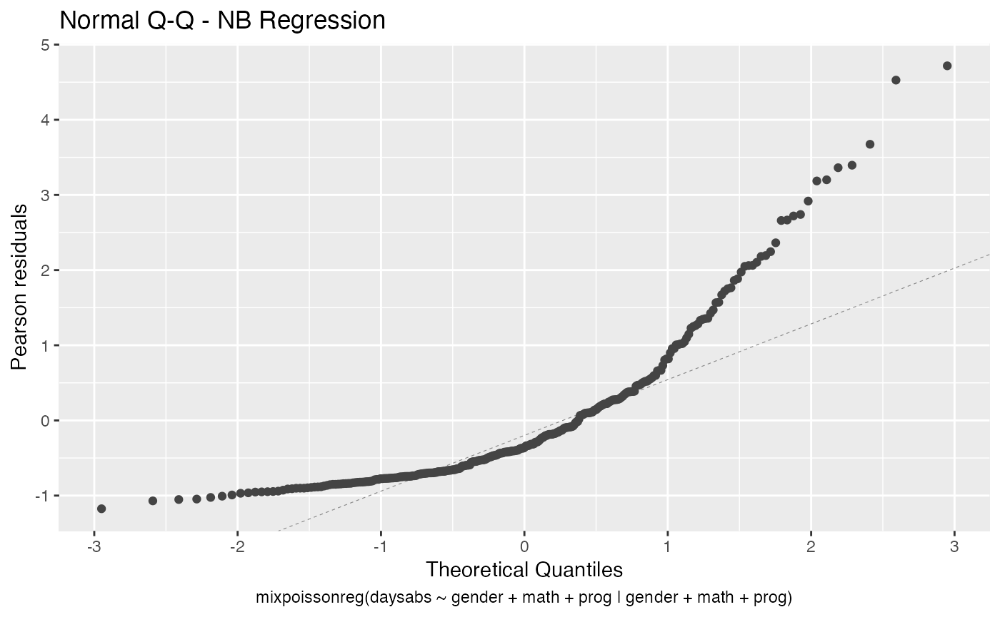
We can also increase the number of identified points. For instance:
autoplot(fit, label.n = 5)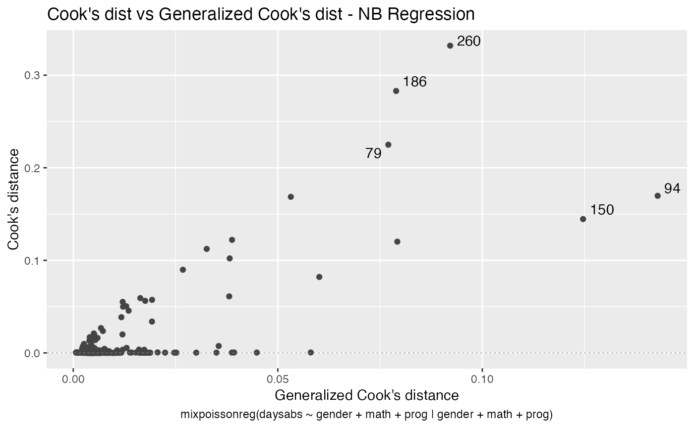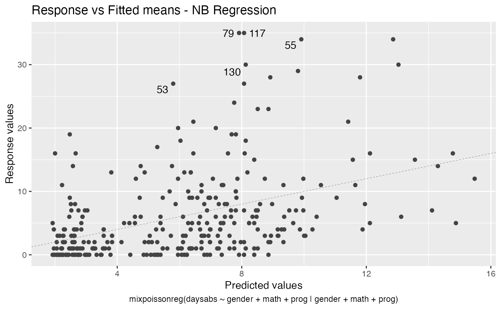
Finally, we can change the labels of the identified points with the argument label.label. For instance, we may want to have the value of the prog covariate instead:
autoplot(fit, label.label = model.frame(fit)$prog)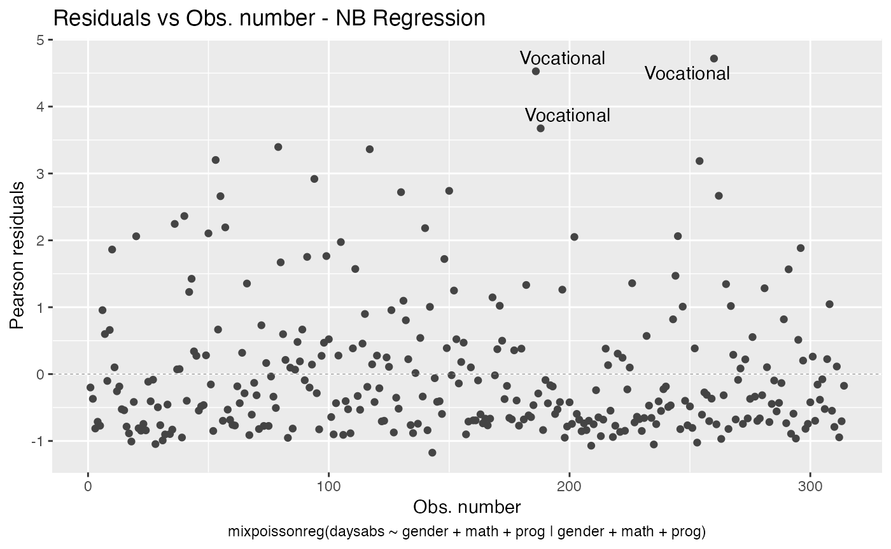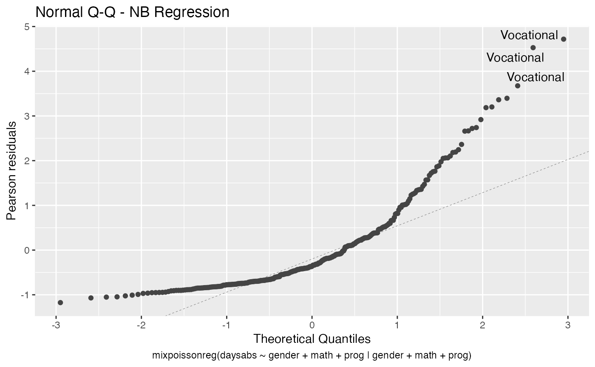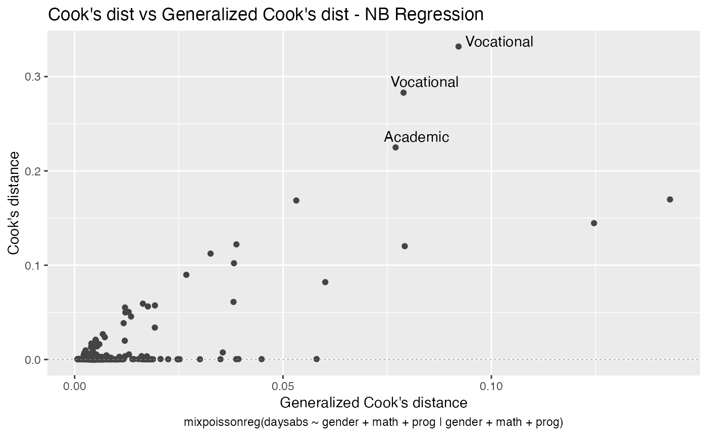
Multiple plots
We can easily create frames of multiple plots by simply using one of the arguments nrow or ncol. For instance,
autoplot(fit, nrow = 2)As previously mentioned, we can change the common title in a multiple plot by changing the sub.caption argument:
autoplot(fit, nrow = 2, sub.caption = "Mixed Poisson Regression")To customize the common title, one can provide a list containing the “customizations” to the gpar_sub.caption argument. For instance: